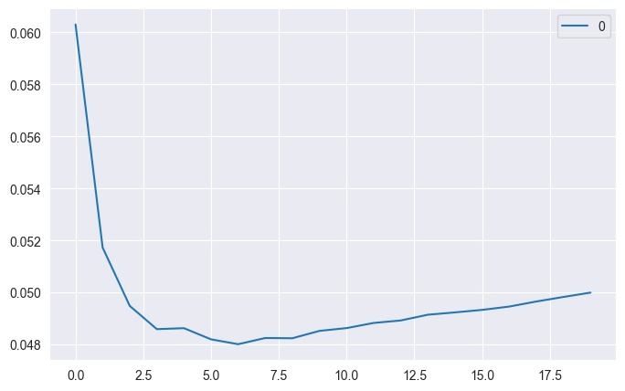
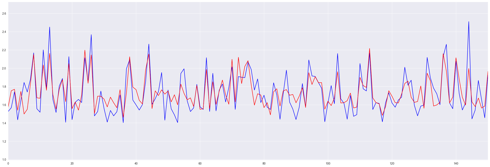
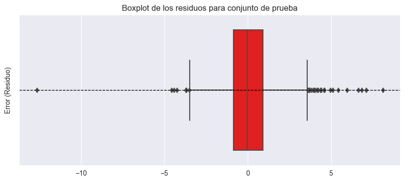
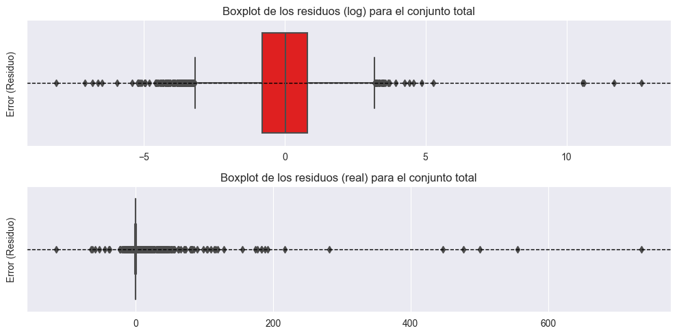

Machine Learning models applied.#
KNN Neighbors#
import pandas as pd
import numpy as np
import matplotlib.pyplot as plt
import seaborn as sns
import warnings
from sklearn.preprocessing import MinMaxScaler, LabelEncoder, OneHotEncoder, PowerTransformer
from sklearn.model_selection import train_test_split, GridSearchCV
from sklearn.neighbors import KNeighborsRegressor
from sklearn import neighbors
from sklearn.metrics import mean_absolute_error, mean_squared_error, mean_squared_log_error, r2_score, explained_variance_score
import scipy.stats as stats
from scipy.stats import kurtosis, boxcox
import mglearn
import matplotlib
warnings.filterwarnings('ignore')
df = pd.read_csv('C:/Users/elias/OneDrive/Desktop/MachineLearning/MLProject/Copia de DataBaseSGC.csv', delimiter=';', low_memory=False)
df
| Record Sequence Number | EQID | Epicenter Latitude (deg; positive N) | Epicenter Longitude (deg; positive E) | Hypocenter Depth (km) | Magnitude | Magnitude type | Tectonic environment (Crustal; Inslab; Interface; Stable; Deep; Volcanic; Oceanic_crust) | Nodal Plane 1 Strike (deg) | Nodal Plane 1 Dip (deg) | ... | Station Elevation (m) | Tmax | Valor_T1.5 | Repi_OpenQuake | Rjb_OpenQuake | Rrup_OpenQuake | Rx_OpenQuake | Rhypo_OpenQuake | Ry0_OpenQuake | T_0.01_RotD50 | |
|---|---|---|---|---|---|---|---|---|---|---|---|---|---|---|---|---|---|---|---|---|---|
| 0 | 73 | CO_20080524192044 | 4.374 | -73.708 | 14.7 | 5.8671 | Mw | Crustal | 196 | 82 | ... | 581.0 | 14 | 0.07 | 91.480436 | 85.352392 | 86.623229 | 5.748244 | 93.551751 | 85.165829 | 4.755494 |
| 1 | 74 | CO_20100729193445 | 3.907 | -75.097 | 33.1 | 5.0567 | Mw | Crustal | 37 | 54 | ... | 581.0 | 15 | 0.05 | 96.319115 | 93.725261 | 99.461616 | 8.545095 | 102.497369 | 93.435791 | 10.887828 |
| 2 | 76 | CO_19940913100134 | 7.105 | -76.665 | 14.0 | 6.0202 | Mw | Crustal | 4 | 64 | ... | 1472.0 | 2 | 0.09 | 180.238872 | 173.579980 | 174.684394 | 95.953705 | 181.353681 | 146.630792 | 4.847060 |
| 3 | 79 | CO_19961104172500 | 7.364 | -77.380 | 14.0 | 6.2562 | Mw | Crustal | 188 | 43 | ... | 1472.0 | 2 | 0.10 | 253.961289 | 244.155697 | 244.405678 | -188.792092 | 254.752031 | 154.796223 | 1.814338 |
| 4 | 84 | CO_19990125181918 | 4.445 | -75.659 | 17.0 | 6.1355 | Mw | Crustal | 8 | 65 | ... | 1472.0 | 3 | 0.07 | 139.662026 | 134.252237 | 135.354859 | -121.819668 | 141.709990 | 56.434882 | 9.462926 |
| ... | ... | ... | ... | ... | ... | ... | ... | ... | ... | ... | ... | ... | ... | ... | ... | ... | ... | ... | ... | ... | ... |
| 8806 | 8774 | CO_20190331072713 | -1.910 | -80.810 | 5.0 | 5.6000 | Mw | Interface | 337 | 24 | ... | 696.0 | 27 | 0.02 | 1236.021754 | 1230.674634 | 1230.049890 | 1178.334392 | 1236.043904 | 374.756057 | 0.004725 |
| 8807 | 8776 | CO_20190331140913 | -2.030 | -80.890 | 10.0 | 5.0181 | Mw | Interface | 354 | 21 | ... | 696.0 | 27 | 0.02 | 1253.442350 | 1249.197259 | 1248.234684 | 1023.671482 | 1253.495004 | 717.168683 | 0.003128 |
| 8808 | 8777 | CO_20190408032300 | -2.120 | -80.360 | 47.0 | 5.0304 | Mw | Interface | 334 | 31 | ... | 696.0 | 27 | 0.02 | 1216.435655 | 1213.141652 | 1209.579637 | 1162.208344 | 1217.416127 | 358.488368 | 0.003101 |
| 8809 | 8778 | CO_20190409113955 | 3.750 | -78.740 | 10.0 | 5.0266 | Mw | Interface | 26 | 32 | ... | 696.0 | 20 | 0.02 | 729.062638 | 725.469563 | 725.018483 | -469.472251 | 729.171353 | 552.584146 | 0.020313 |
| 8810 | 8809 | CO_20200117043206 | 2.120 | -79.560 | 20.0 | 4.7000 | Mw | Interface | 44 | 25 | ... | 696.0 | 40 | 0.02 | 876.174697 | 873.178545 | 872.100140 | -344.376016 | 876.453666 | 802.354454 | 0.007543 |
8811 rows × 30 columns
categorical_columns = df.select_dtypes(include=['object']).columns
categorical_columns
Index(['EQID', 'Magnitude type',
'Tectonic environment (Crustal; Inslab; Interface; Stable; Deep; Volcanic; Oceanic_crust)',
'Style-of-Faulting (S; R; N; U)', 'Station ID', 'Station Code'],
dtype='object')
df.drop(["Record Sequence Number"], axis=1, inplace=True)
df.drop(["Station ID"], axis=1, inplace=True)
df.drop(["Station Code"], axis=1, inplace=True)
df.drop(["Magnitude type"], axis=1, inplace=True)
df.drop(["EQID"], axis=1, inplace=True)
df.drop(["Valor_T1.5"], axis=1, inplace=True)
df.drop(["Tmax"], axis=1, inplace=True)
df.drop(["Epicenter Latitude (deg; positive N)"], axis=1, inplace=True)
df.drop(["Epicenter Longitude (deg; positive E)"], axis=1, inplace=True)
df.drop(["Station Latitude (deg positive N)"], axis=1, inplace=True)
df.drop(["Station Longitude (deg positive E)"], axis=1, inplace=True)
df = df[df['T_0.01_RotD50'] > 0]
df_copy = df.copy()
df_copy["T_0.01_RotD50"]= np.log(df_copy["T_0.01_RotD50"])
df_copy.describe().T
| count | mean | std | min | 25% | 50% | 75% | max | |
|---|---|---|---|---|---|---|---|---|
| Hypocenter Depth (km) | 8809.0 | 60.004416 | 62.347718 | 1.000000 | 10.000000 | 20.000000 | 132.000000 | 209.900000 |
| Magnitude | 8809.0 | 4.988410 | 0.676019 | 3.800000 | 4.500000 | 4.900000 | 5.260000 | 7.782200 |
| Nodal Plane 1 Strike (deg) | 8809.0 | 177.646838 | 106.261691 | 2.000000 | 88.000000 | 168.000000 | 265.000000 | 360.000000 |
| Nodal Plane 1 Dip (deg) | 8809.0 | 58.327165 | 23.395052 | 1.000000 | 41.000000 | 65.000000 | 80.000000 | 90.000000 |
| Nodal Plane 1 Rake Angle (deg) | 8809.0 | 13.527075 | 109.978298 | -180.000000 | -69.000000 | 20.000000 | 107.000000 | 180.000000 |
| Nodal Plane 2 Strike (deg) | 8809.0 | 169.450335 | 108.280821 | 0.000000 | 71.000000 | 172.000000 | 258.000000 | 360.000000 |
| Nodal Plane 2 Dip (deg) | 8809.0 | 68.298558 | 16.068522 | 14.000000 | 58.000000 | 69.000000 | 82.000000 | 90.000000 |
| Nodal Plane 2 Rake Angle (deg) | 8809.0 | 18.633897 | 102.792576 | -180.000000 | -50.000000 | 18.000000 | 100.000000 | 177.000000 |
| Fault Plane (1; 2; X) | 8809.0 | 1.440005 | 0.496416 | 1.000000 | 1.000000 | 1.000000 | 2.000000 | 2.000000 |
| Station Elevation (m) | 8809.0 | 1192.927767 | 1107.990874 | 4.000000 | 234.000000 | 780.000000 | 1948.000000 | 4136.000000 |
| Repi_OpenQuake | 8809.0 | 518.287674 | 358.644620 | 2.139510 | 244.547715 | 436.488453 | 718.121614 | 1814.891470 |
| Rjb_OpenQuake | 8809.0 | 514.948161 | 358.493624 | 0.000000 | 241.541484 | 433.272980 | 715.996061 | 1806.111669 |
| Rrup_OpenQuake | 8809.0 | 527.227522 | 348.070661 | 12.535892 | 255.135433 | 440.193666 | 717.137495 | 1804.589468 |
| Rx_OpenQuake | 8809.0 | -5.348640 | 417.649621 | -1630.754422 | -230.031669 | -6.358898 | 217.860098 | 1691.271485 |
| Rhypo_OpenQuake | 8809.0 | 532.487252 | 348.807960 | 15.963300 | 260.105496 | 445.814200 | 722.325946 | 1814.924143 |
| Ry0_OpenQuake | 8809.0 | 349.513260 | 312.917566 | 0.000000 | 109.324233 | 268.673176 | 490.453078 | 1727.496966 |
| T_0.01_RotD50 | 8809.0 | -1.670185 | 2.332732 | -12.366241 | -3.491755 | -1.905817 | 0.007283 | 6.773999 |
df_numerico = df_copy.select_dtypes(include=[float, int])
from sklearn.preprocessing import StandardScaler
from statsmodels.stats.outliers_influence import variance_inflation_factor
# Estandarizar datos
scaler_X = MinMaxScaler()
scaler_y = MinMaxScaler()
df_numerico.drop(["Fault Plane (1; 2; X)"], axis=1, inplace=True) #Se va a codificar dsp.
# Escalar las variables predictoras
df_scaled = pd.DataFrame(scaler_X.fit_transform(df_numerico.drop("T_0.01_RotD50", axis=1)),
columns=df_numerico.drop("T_0.01_RotD50", axis=1).columns)
# Escalar la variable de respuesta
Aceleracion_escalada = scaler_y.fit_transform(df_numerico[["T_0.01_RotD50"]]) # Debe ser 2D
df_scaled["T_0.01_RotD50"] = Aceleracion_escalada.flatten()
df_scaled
| Hypocenter Depth (km) | Magnitude | Nodal Plane 1 Strike (deg) | Nodal Plane 1 Dip (deg) | Nodal Plane 1 Rake Angle (deg) | Nodal Plane 2 Strike (deg) | Nodal Plane 2 Dip (deg) | Nodal Plane 2 Rake Angle (deg) | Station Elevation (m) | Repi_OpenQuake | Rjb_OpenQuake | Rrup_OpenQuake | Rx_OpenQuake | Rhypo_OpenQuake | Ry0_OpenQuake | T_0.01_RotD50 | |
|---|---|---|---|---|---|---|---|---|---|---|---|---|---|---|---|---|
| 0 | 0.065582 | 0.519085 | 0.541899 | 0.910112 | 0.002778 | 0.294444 | 0.986842 | 0.481793 | 0.139642 | 0.049285 | 0.047258 | 0.041342 | 0.492622 | 0.043130 | 0.049300 | 0.727553 |
| 1 | 0.153662 | 0.315579 | 0.097765 | 0.595506 | 0.883333 | 0.430556 | 0.565789 | 0.630252 | 0.139642 | 0.051954 | 0.051893 | 0.048506 | 0.493464 | 0.048102 | 0.054087 | 0.770831 |
| 2 | 0.062231 | 0.557531 | 0.005587 | 0.707865 | 0.525000 | 0.750000 | 0.894737 | 0.932773 | 0.355276 | 0.098248 | 0.096107 | 0.090482 | 0.519776 | 0.091937 | 0.084880 | 0.728550 |
| 3 | 0.062231 | 0.616795 | 0.519553 | 0.471910 | 0.616667 | 0.177778 | 0.644737 | 0.851541 | 0.355276 | 0.138917 | 0.135183 | 0.129388 | 0.434061 | 0.132737 | 0.089607 | 0.677210 |
| 4 | 0.076592 | 0.586485 | 0.016760 | 0.719101 | 0.441667 | 0.297222 | 0.750000 | 0.075630 | 0.355276 | 0.075864 | 0.074332 | 0.068535 | 0.454221 | 0.069900 | 0.032669 | 0.763503 |
| ... | ... | ... | ... | ... | ... | ... | ... | ... | ... | ... | ... | ... | ... | ... | ... | ... |
| 8804 | 0.019148 | 0.452011 | 0.935754 | 0.258427 | 0.655556 | 0.536111 | 0.736842 | 0.795518 | 0.167473 | 0.680668 | 0.681395 | 0.679396 | 0.845595 | 0.678214 | 0.216936 | 0.366315 |
| 8805 | 0.043083 | 0.305886 | 0.983240 | 0.224719 | 0.744444 | 0.488889 | 0.723684 | 0.759104 | 0.167473 | 0.690278 | 0.691650 | 0.689543 | 0.799038 | 0.687915 | 0.415149 | 0.344772 |
| 8806 | 0.220201 | 0.308975 | 0.927374 | 0.337079 | 0.708333 | 0.477778 | 0.605263 | 0.781513 | 0.167473 | 0.669863 | 0.671687 | 0.667973 | 0.840741 | 0.667859 | 0.207519 | 0.344306 |
| 8807 | 0.043083 | 0.308021 | 0.067039 | 0.348315 | 0.227778 | 0.597222 | 0.578947 | 0.266106 | 0.167473 | 0.401005 | 0.401675 | 0.397579 | 0.349570 | 0.396456 | 0.319876 | 0.442509 |
| 8808 | 0.090953 | 0.226006 | 0.117318 | 0.269663 | 0.255556 | 0.616667 | 0.671053 | 0.249300 | 0.167473 | 0.482159 | 0.483458 | 0.479653 | 0.387227 | 0.478326 | 0.464461 | 0.390752 |
8809 rows × 16 columns
df_scaled.drop(["Nodal Plane 1 Rake Angle (deg)"], axis=1, inplace=True)
df_scaled.drop(["Nodal Plane 2 Rake Angle (deg)"], axis=1, inplace=True)
df_scaled.drop(["Nodal Plane 2 Dip (deg)"], axis=1, inplace=True)
df_scaled.drop(["Nodal Plane 2 Strike (deg)"], axis=1, inplace=True)
df_scaled.drop(["Rx_OpenQuake"], axis=1, inplace=True)
df_scaled.drop(["Ry0_OpenQuake"], axis=1, inplace=True)
df_scaled.drop(["Rhypo_OpenQuake"], axis=1, inplace=True)
df_scaled.drop(["Rrup_OpenQuake"], axis=1, inplace=True)
df_scaled.drop(["Repi_OpenQuake"], axis=1, inplace=True)
# Codificar la variable categórica con OneHotEncoder
X_categorical = df_copy[['Tectonic environment (Crustal; Inslab; Interface; Stable; Deep; Volcanic; Oceanic_crust)']].astype(str)
enc = OneHotEncoder(sparse_output=False)
X_encoded = enc.fit_transform(X_categorical) # Devuelve un array listo para KNN
Y_categorical = df_copy[["Fault Plane (1; 2; X)"]].astype(str)
enc = OneHotEncoder(sparse_output=False)
Y_encoded = enc.fit_transform(Y_categorical)
Z_categorical = df_copy[["Style-of-Faulting (S; R; N; U)"]].astype(str)
enc = OneHotEncoder(sparse_output=False)
Z_encoded = enc.fit_transform(Z_categorical)
X_numerical = df_scaled.drop(columns=["T_0.01_RotD50"]).values
# Paso 3: Combinar características numéricas y codificadas
X_final = np.hstack((X_numerical, X_encoded,Y_encoded,Z_encoded))
y = df_scaled["T_0.01_RotD50"].values
X_train, X_test, y_train, y_test = train_test_split(X_final, y, test_size=0.25, random_state=0)
df_scaled.describe().T
| count | mean | std | min | 25% | 50% | 75% | max | |
|---|---|---|---|---|---|---|---|---|
| Hypocenter Depth (km) | 8809.0 | 0.282453 | 0.298457 | 0.0 | 0.043083 | 0.090953 | 0.627094 | 1.0 |
| Magnitude | 8809.0 | 0.298430 | 0.169760 | 0.0 | 0.175782 | 0.276229 | 0.366632 | 1.0 |
| Nodal Plane 1 Strike (deg) | 8809.0 | 0.490634 | 0.296820 | 0.0 | 0.240223 | 0.463687 | 0.734637 | 1.0 |
| Nodal Plane 1 Dip (deg) | 8809.0 | 0.644125 | 0.262866 | 0.0 | 0.449438 | 0.719101 | 0.887640 | 1.0 |
| Station Elevation (m) | 8809.0 | 0.287737 | 0.268149 | 0.0 | 0.055663 | 0.187803 | 0.470474 | 1.0 |
| Rjb_OpenQuake | 8809.0 | 0.285114 | 0.198489 | 0.0 | 0.133736 | 0.239893 | 0.396430 | 1.0 |
| T_0.01_RotD50 | 8809.0 | 0.558826 | 0.121876 | 0.0 | 0.463656 | 0.546515 | 0.646467 | 1.0 |
rmsle_val = []
best_rmsle = 1.0
for k in range(20):
k = k+1
knn = neighbors.KNeighborsRegressor(n_neighbors = k)
knn.fit(X_train, y_train)
y_pred = knn.predict(X_test)
rmsle = np.sqrt(mean_squared_log_error(y_test,y_pred))
if (rmsle < best_rmsle):
best_rmsle = rmsle
best_k = k
rmsle_val.append(rmsle)
print('RMSLE value for k= ' , k , 'is:', rmsle)
print(f"Best RMSLE: {best_rmsle}, Best k: {best_k}")
RMSLE value for k= 1 is: 0.06030474146511146
RMSLE value for k= 2 is: 0.0517312877031794
RMSLE value for k= 3 is: 0.04948777646699365
RMSLE value for k= 4 is: 0.0485939841896744
RMSLE value for k= 5 is: 0.04863133284402343
RMSLE value for k= 6 is: 0.04820140906873662
RMSLE value for k= 7 is: 0.04801468716557058
RMSLE value for k= 8 is: 0.048253261763792264
RMSLE value for k= 9 is: 0.048243789827616394
RMSLE value for k= 10 is: 0.04852713133289467
RMSLE value for k= 11 is: 0.04863408183550073
RMSLE value for k= 12 is: 0.04883184195745926
RMSLE value for k= 13 is: 0.04892784252695224
RMSLE value for k= 14 is: 0.04914836655789553
RMSLE value for k= 15 is: 0.04923763275995367
RMSLE value for k= 16 is: 0.04933388650369725
RMSLE value for k= 17 is: 0.049461491268096035
RMSLE value for k= 18 is: 0.04965604495346854
RMSLE value for k= 19 is: 0.049830483137070905
RMSLE value for k= 20 is: 0.049998408217304446
Best RMSLE: 0.04801468716557058, Best k: 7
sns.set_style("darkgrid")
curve = pd.DataFrame(rmsle_val)
curve.plot(figsize=(8,5));
#plt.style.use("bmh")

knn = neighbors.KNeighborsRegressor(n_neighbors = 7)
knn.fit(X_train,y_train)
y_pred = knn.predict(X_test)
print("Puntaje test: ",knn.score(X_test, y_test))
print("Puntaje train: ",knn.score(X_train, y_train))
y_predtotal=knn.predict(X_final)
puntajetotal=knn.score(X_final,y)
print("Puntaje conjunto total: ", puntajetotal)
Puntaje test: 0.6274141053078515
Puntaje train: 0.7101510784948222
Puntaje conjunto total: 0.6896395010044846
# Ordenamos los valores reales y sus predicciones para que la línea tenga sentido
plt.figure(figsize=(30, 10))
sorted_indices = np.argsort(y_test) # Obtiene los índices que ordenan y_test
plt.plot(np.exp(y_test), linestyle="-", color = "Blue")
plt.plot(np.exp(y_pred), linestyle="-", color = "Red")
plt.xlim([0,150])
plt.show()

y_test_unscaled = scaler_y.inverse_transform(y_test.reshape(-1, 1)).flatten()
y_pred_unscaled = scaler_y.inverse_transform(y_pred.reshape(-1, 1)).flatten()
y_test_original = np.exp(y_test_unscaled)
y_pred_original = np.exp(y_pred_unscaled)
residuos = y_test_unscaled - y_pred_unscaled # Diferencia entre valores logaritmicos reales y predichos
residuosreales = y_test_original - y_pred_original
plt.figure(figsize=(10,4))
sns.boxplot(x=residuos, orient="h", color="red")
plt.axhline(y=0, color="black", linestyle="--", linewidth=1) # Línea en y=0
plt.ylabel("Error (Residuo)")
plt.title("Boxplot de los residuos para conjunto de prueba")
plt.show()

ylogreal = scaler_y.inverse_transform(y.reshape(-1, 1)).flatten()
ylogpred= scaler_y.inverse_transform(y_predtotal.reshape(-1, 1)).flatten()
residuos_log = ylogpred-ylogreal
yREAL = np.exp(ylogreal)
ypredREAL = np.exp(ylogpred)
residuos_totales = yREAL - ypredREAL
fig, axes = plt.subplots(2, 1, figsize=(10, 5))
sns.boxplot(x=residuos_log, orient="h", color="red", ax=axes[0])
axes[0].axhline(y=0, color="black", linestyle="--", linewidth=1)
axes[0].set_ylabel("Error (Residuo)")
axes[0].set_title("Boxplot de los residuos (log) para el conjunto total")
sns.boxplot(x=residuos_totales, orient="h", color="red", ax=axes[1])
axes[1].axhline(y=0, color="black", linestyle="--", linewidth=1)
axes[1].set_ylabel("Error (Residuo)")
axes[1].set_title("Boxplot de los residuos (real) para el conjunto total")
plt.tight_layout()
plt.show()
re = pd.DataFrame({
'Residuo Log': residuos_log,
'Residuo Totales': residuos_totales
})

re.describe()
| Residuo Log | Residuo Totales | |
|---|---|---|
| count | 8809.000000 | 8809.000000 |
| mean | -0.024633 | 1.451620 |
| std | 1.299332 | 16.005855 |
| min | -8.105758 | -115.332105 |
| 25% | -0.796791 | -0.055523 |
| 50% | 0.036945 | -0.002266 |
| 75% | 0.794425 | 0.260391 |
| max | 12.662456 | 735.631049 |
Regresión Ridge#
# Estandarizar datos
scaler_XRidge = MinMaxScaler()
scaler_yRidge = MinMaxScaler()
#df_numerico.drop(["Fault Plane (1; 2; X)"], axis=1, inplace=True) #Se va a codificar dsp.
# Escalar las variables predictoras
df_scaledRidge = pd.DataFrame(scaler_XRidge.fit_transform(df_numerico.drop("T_0.01_RotD50", axis=1)),
columns=df_numerico.drop("T_0.01_RotD50", axis=1).columns)
# Escalar la variable de respuesta
Aceleracion_escalada = scaler_yRidge.fit_transform(df_numerico[["T_0.01_RotD50"]]) # Debe ser 2D
df_scaledRidge["T_0.01_RotD50"] = Aceleracion_escalada.flatten()
df_scaledRidge
| Hypocenter Depth (km) | Magnitude | Nodal Plane 1 Strike (deg) | Nodal Plane 1 Dip (deg) | Nodal Plane 1 Rake Angle (deg) | Nodal Plane 2 Strike (deg) | Nodal Plane 2 Dip (deg) | Nodal Plane 2 Rake Angle (deg) | Station Elevation (m) | Repi_OpenQuake | Rjb_OpenQuake | Rrup_OpenQuake | Rx_OpenQuake | Rhypo_OpenQuake | Ry0_OpenQuake | T_0.01_RotD50 | |
|---|---|---|---|---|---|---|---|---|---|---|---|---|---|---|---|---|
| 0 | 0.065582 | 0.519085 | 0.541899 | 0.910112 | 0.002778 | 0.294444 | 0.986842 | 0.481793 | 0.139642 | 0.049285 | 0.047258 | 0.041342 | 0.492622 | 0.043130 | 0.049300 | 0.727553 |
| 1 | 0.153662 | 0.315579 | 0.097765 | 0.595506 | 0.883333 | 0.430556 | 0.565789 | 0.630252 | 0.139642 | 0.051954 | 0.051893 | 0.048506 | 0.493464 | 0.048102 | 0.054087 | 0.770831 |
| 2 | 0.062231 | 0.557531 | 0.005587 | 0.707865 | 0.525000 | 0.750000 | 0.894737 | 0.932773 | 0.355276 | 0.098248 | 0.096107 | 0.090482 | 0.519776 | 0.091937 | 0.084880 | 0.728550 |
| 3 | 0.062231 | 0.616795 | 0.519553 | 0.471910 | 0.616667 | 0.177778 | 0.644737 | 0.851541 | 0.355276 | 0.138917 | 0.135183 | 0.129388 | 0.434061 | 0.132737 | 0.089607 | 0.677210 |
| 4 | 0.076592 | 0.586485 | 0.016760 | 0.719101 | 0.441667 | 0.297222 | 0.750000 | 0.075630 | 0.355276 | 0.075864 | 0.074332 | 0.068535 | 0.454221 | 0.069900 | 0.032669 | 0.763503 |
| ... | ... | ... | ... | ... | ... | ... | ... | ... | ... | ... | ... | ... | ... | ... | ... | ... |
| 8804 | 0.019148 | 0.452011 | 0.935754 | 0.258427 | 0.655556 | 0.536111 | 0.736842 | 0.795518 | 0.167473 | 0.680668 | 0.681395 | 0.679396 | 0.845595 | 0.678214 | 0.216936 | 0.366315 |
| 8805 | 0.043083 | 0.305886 | 0.983240 | 0.224719 | 0.744444 | 0.488889 | 0.723684 | 0.759104 | 0.167473 | 0.690278 | 0.691650 | 0.689543 | 0.799038 | 0.687915 | 0.415149 | 0.344772 |
| 8806 | 0.220201 | 0.308975 | 0.927374 | 0.337079 | 0.708333 | 0.477778 | 0.605263 | 0.781513 | 0.167473 | 0.669863 | 0.671687 | 0.667973 | 0.840741 | 0.667859 | 0.207519 | 0.344306 |
| 8807 | 0.043083 | 0.308021 | 0.067039 | 0.348315 | 0.227778 | 0.597222 | 0.578947 | 0.266106 | 0.167473 | 0.401005 | 0.401675 | 0.397579 | 0.349570 | 0.396456 | 0.319876 | 0.442509 |
| 8808 | 0.090953 | 0.226006 | 0.117318 | 0.269663 | 0.255556 | 0.616667 | 0.671053 | 0.249300 | 0.167473 | 0.482159 | 0.483458 | 0.479653 | 0.387227 | 0.478326 | 0.464461 | 0.390752 |
8809 rows × 16 columns
X_numericalRidge = df_scaledRidge.drop(columns=["T_0.01_RotD50"]).values
yRidge = df_scaledRidge["T_0.01_RotD50"].values
# Paso 3: Combinar características numéricas y codificadas
X_finalRidge = np.hstack((X_numericalRidge, X_encoded,Y_encoded,Z_encoded))
X_trainRidge, X_testRidge, y_trainRidge, y_testRidge = train_test_split(X_finalRidge, yRidge, test_size=0.25, random_state=0)
from sklearn.linear_model import LinearRegression
from sklearn.model_selection import train_test_split
lr = LinearRegression().fit(X_trainRidge, y_trainRidge)
print("lr.coef_: {}".format(lr.coef_))
print("lr.intercept_: {}".format(lr.intercept_))
lr.coef_: [-7.91534671e-02 2.17252487e-01 -2.60662972e-03 -6.09579893e-03
-8.53359907e-03 -1.01898556e-02 3.21373693e-03 -6.32277508e-03
-4.84801007e-03 5.70564052e+00 -7.77166017e+00 2.28056553e+00
-2.34304053e-02 -5.46196273e-01 6.78190523e-03 -4.06989432e-04
3.67296264e-02 1.98046997e-03 -3.83031069e-02 1.25779880e-04
-1.25779879e-04 -8.48515312e-03 3.00221669e-03 5.48293643e-03]
lr.intercept_: 0.6292991351146107
print("Training set score: {:.2f}".format(lr.score(X_trainRidge, y_trainRidge)))
print("Test set score: {:.2f}".format(lr.score(X_testRidge, y_testRidge)))
Training set score: 0.53
Test set score: 0.52
from sklearn.linear_model import Ridge
ridge = Ridge(alpha=10).fit(X_trainRidge, y_trainRidge)
print("Training set score: {:.2f}".format(ridge.score(X_trainRidge, y_trainRidge)))
print("Test set score: {:.2f}".format(ridge.score(X_testRidge, y_testRidge)))
Training set score: 0.51
Test set score: 0.49
Lasso#
from sklearn.linear_model import Lasso
lasso = Lasso().fit(X_train, y_train)
print("Training set score: {:.2f}".format(lasso.score(X_train, y_train)))
print("Test set score: {:.2f}".format(lasso.score(X_test, y_test)))
print("Number of features used: {}".format(np.sum(lasso.coef_ != 0)))
Training set score: 0.00
Test set score: -0.00
Number of features used: 0
lasso001 = Lasso(alpha=0.001, max_iter=10000000).fit(X_train, y_train)
print("Training set score: {:.2f}".format(lasso001.score(X_train, y_train)))
print("Test set score: {:.2f}".format(lasso001.score(X_test, y_test)))
print("Number of features used: {}".format(np.sum(lasso001.coef_ != 0)))
Training set score: 0.50
Test set score: 0.49
Number of features used: 6